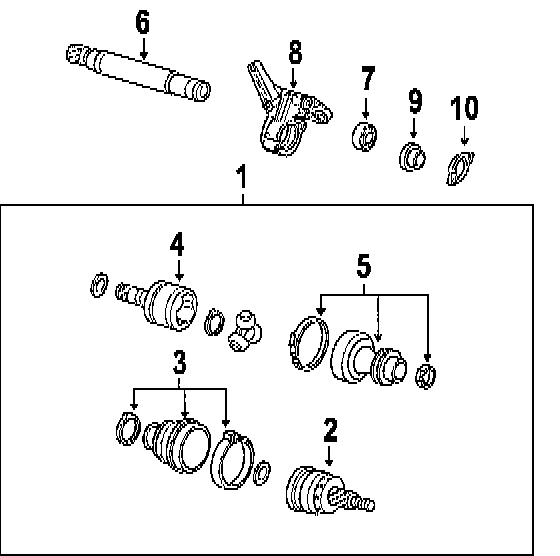

Operation CHARM
: Car repair manuals for everyone.
Home
>>
Saab
>>
2011
>>
9-3 FWD (9440) L4-2.0L Turbo
>>
Parts and Labor
>>
Transmission and Drivetrain
>>
Drive Axles, Bearings and Joints
>>
Axle Shaft Assembly
>>
Images
Images
Front Axle:
